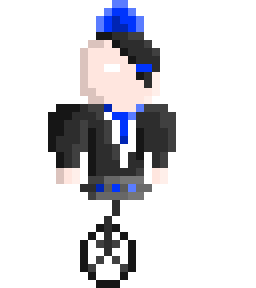

Cyber Drunk
Nom: Cyber Drunk
Genre: Rythme, infiltration
Plateforme: Construct 2
Joueur: 1
Pitch
Sur navigateur, incarnez un voleur de bar et récoltez le plus d'alcool dans ce monde cyberpunk en utilisant la musique pour camoufler vos mouvements des videurs.
Contexte
Cyber Drunk est un projet qui a vu le jour durant la Mix And Game Jam 2020 en 48 heures, le thème était de prendre deux types de jeux et de les mélanger. C'était ma toute première Game Jam et pour ce projet, j'occupais le poste de graphiste 2D pixel art.

Intention
- M'entrainer à la réalisation de pixel art.
- Réaliser tous les sprites demander dans le temps impartit:
- Le personnage principal et ses animations
- 9 PNJs avec leur animation
- Une tilemap pour le background
- Une tilemap pour les décorations
- Objets divers
Sprites
